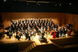

| Winchester City Festival Choir
The WCFC is an adult choir of about 60 singers. Under the new direction of music teacher Graham Kidd, the choir is aiming to expand and broaden its repertoire. WCFC performs at a variety of venues in Hampshire and has performed in Winchester's twinned towns of Laon and Geissen. In January or February of each year the WCFC presents a concert with professional soloists and orchestra. Each May, WCFC joins with other choirs in the Winchester & County Music Festival to perform major choral works at either Romsey Abbey or Winchester Cathedral. We are keen to increase our numbers, particularly in the tenor and bass section, so if you'd like to consider joining us, please see our website and contact the membership secretary to arrange a taster rehearsal and short informal audition. Member Secretary: Carol Rees-Williams
|
Click image to view  |